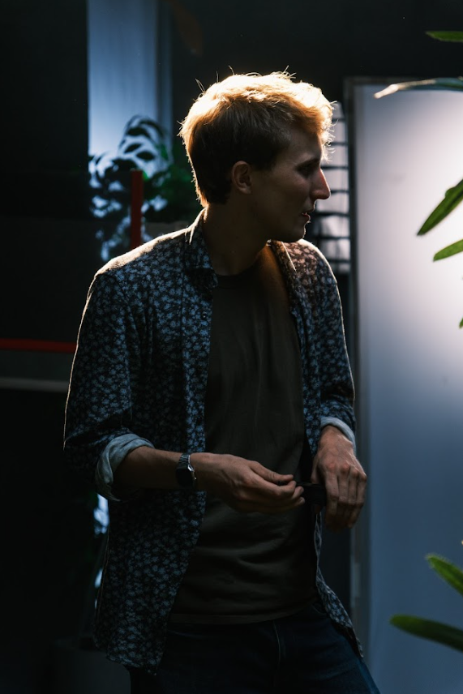

Festivals & Press
2022
- Press Release: City of Münster, Office of Communication.
- Other press Releases: HFF Munich.
- Article: Daria Berejnistkaja – Westfälische Nachrichten ("16-year-old Münster boy has already produced more than 30 films").
- Database: Ivan Dubrovin, Internet Movie Database (IMDb).
- Database: Frau K on Crew United.
- Context: Clergy of the German Diocese of the Russian Orthodox Church.
- Database: Yuriy Dubrovin, Internet Movie Database (IMDb).
2021
- Official Selection: L.A. Shorts International Film Festival (ADVENTURE Program) – Academy Award® qualifying.
- Official Selection: LAUREACI 2021 – BNP Paribas Green Film Festival.
2020
- Program: Werkstatt der jungen Filmszene (WdJ).
2017
- Festival: FiSH 2017 – Festival at the StadtHafen.
- Festival: Filmfestival-Münster ("I Want To Be Famous").
- Award: Wilhelm-Hittorf-Gymnasium Münster ("China and Germany in my eyes").